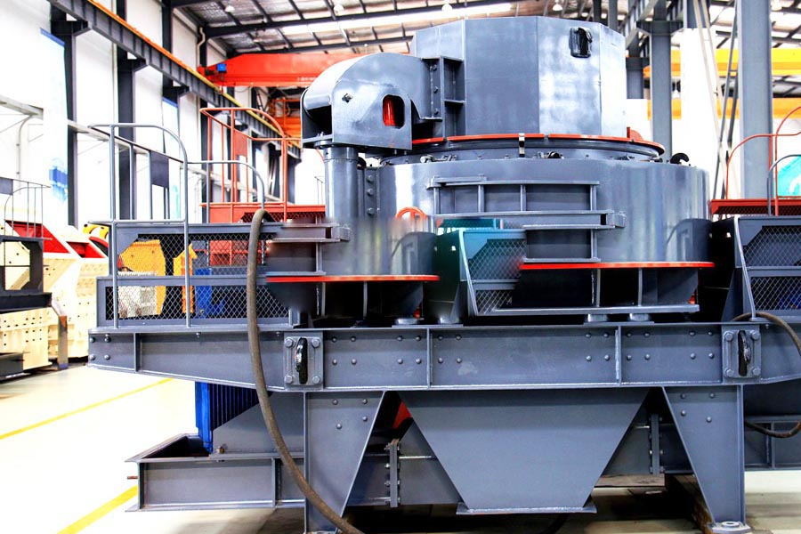

Construction waste crushing production line

Mobile construction waste crushing station for urban construction waste crushing.
crusher plant for sale
crusher plant for sale. Pebble crusher, pebble crusher is our absorption, digestion on the basis of advanced technology, combined with domestic industry specific working conditions, and in accordance with the new generation of our many years of production experience crusher developed efficient crushing machine.
Pebble crusher, pebble crushing equipment, sand making industry in the pebbles, pebbles can be broken a lot of equipment, mainly jaw crusher, impact crusher, cone crusher and so on, can be used as a pebble crusher.

Uses of Cobblestone:
Cobblestoned and setted streets gradually gave way to macadam roads, and later to tarmac, and finally to asphalt at the beginning of the 20th century. However, cobblestones are often retained in historic areas, even for streets with modern vehicular traffic. Many older villages and cities in Europe are still paved with cobblestones. In recent decades, cobblestones have become a popular material for paving newly pedestrianised streets in Europe. In this case, the noisy nature of the surface is an advantage as pedestrians can hear approaching vehicles.
Cobblestone Crusher:
High-efficiency cobble stone Crusher: This machine adopts the proper broken cavity shape and broken principle of lamination , produces broken effect among particles,thereby increases the cube proportion of finished product obviously, decreases the needle schistose cobblestone, and the grade is more homogeneous.
Zambia cobblestone crusher for sale. Pebble crusher, pebble crusher price, pebble crusher manufacturers, pebble crusher is mainly adapted to the current artificial sand industry, pebble crusher equipment has large crushing ratio, even granularity, simple structure, reliable operation, easy maintenance, operating costs and economic and so on.
Shanghai CAG is a manufacturer of state manufacturers cobblestone Crusher，Our company not only manufactures crushers, as well as Grinding Mill and Sand Machine，Whether in mining or in the construction industry, our products have a wide range of applications.
Pebble Basics
A pebble is a clast of rock with a particle size of 4 to 64 millimetres based on the Krumbein phi scale of sedimentology. Pebbles are generally considered to be larger than granules (2 to 4 millimetres diameter) and smaller than cobbles (64 to 256 millimetres diameter). A rock made predominantly of pebbles is termed a conglomerate. Pebble tools are among the earliest known man-made artifacts, dating from the Palaeolithic period of human history. Cobblestones are stones that were frequently used in the pavement of early streets.
Cobblestones are typically either set in sand or similar material, or are bound together with mortar. Paving with cobblestones allows a road to be heavily used all year long. It prevents the buildup of ruts often found in dirt roads. It has the additional beneficial advantage of not getting muddy in wet weather or dusty in dry weather. A disadvantage is that carriage wheels, horse hooves and even modern automobiles make a lot of noise when rolling over cobblestone paving. In England, the custom was to strew the cobbles outside the house of a sick or dying person with straw, so as to dampen the sound.
Pebble crusher, pebble crusher manufacturers, stone crusher, pebble crusher has a crushing ratio, even granularity, simple structure, reliable operation, easy maintenance, operating costs and economic characteristics. Widely used in many sectors in mining, smelting, building material, highway, railway, water conservancy and chemical industry.
crusher plant for sale. Pebble crusher, the European version of the crusher, dedicated to the pebble crusher --- PFW European version of the crusher is with international advanced level of the latest generation of broken equipment products. It is the choice of most high-end production of materials with the world-class manufacturing processes, were designed.
Leave Me A Message, Now
If you have any questions regarding equipment prices, production line configuration or other problems, you can send a message to us, we will contact you soon.